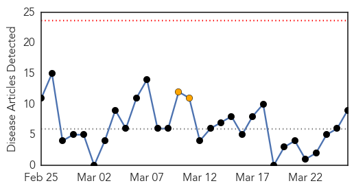

30 Day Trends
Web: 0 alerts, 2 warnings
Twitter: 0 alerts, 0 warnings
Top Articles:
- 0.989
- Vaccination is the best way to combat measles
- 0.984
- Measles Outbreaks Fueled by Declined Vaccinations?
- 0.939
- OC Health Officials Warn Of Measles Outbreak « CBS Los Angeles
- 0.890
- Measles outbreak concerns mother of vulnerable child
- 0.857
- Manitoba confirms second measles case
- 0.840
- Evidence supports it, so why are parents still reluctant to vaccinate their children?
- 0.826
- Health officials investigate to see whether others at U of M may contracted measles
- 0.614
- Hundreds of students suspended from school for inadequate immunizations
- 0.514
- Prince Charles secures 5M vaccines for PH typhoon victims
Top Tweets:
-
No tweets found for Mar 26, 2014
Web/News Articles
Tweets

Article Locations